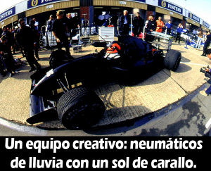

Lluvia
 De: La Frikipedia, la enciclopedia extremadamente seria.
De: La Frikipedia, la enciclopedia extremadamente seria.
«Raining Blood, from a lacerated sky...bleeding its horror, creating my structure... now i shall reign in blood!»
~ Slayer sobre la lluvia
«Los japoneses decubrieron que el hagua... MOJA, no es coincidencia »
~ Josue Yrion sobre el hagua y los japos
Acción y efecto de caer agua (o símiles) desde el cielo.Esto es todo.Pero como esto, como artículo frikipédico queda muy pobre, vamos a tunearlo un poco.
Clasificación
- De hagua:La más frecuente y la más aburrida.Ya hablaremos de ella más adelante.
- De fuego:Sólo se encuentra en textos bíblicos, zonas volcánicas y en los países con petróleo que "han ofendido a América".No es muy divertida, pero es entretenida.Suele ir acompañada de gas tóxico, azufre y soldados americanos.Es peligosa si te cae un americano encima.
- De mierda: Generalmente inexistente excepto en la temporada de emigración del estornino y la paloma.A veces se usa como expresión, para mostrar reticencia hacia una obligación("lo haré el dia en que llueva mierda") o exageración ("¡me lo habéis dejado todo como si hubiera llovido mierda!").También es sucesos bíblicos:
«Y Sefraín se cubrió la cara con las manos, pues llovían heces desde el cielo sobre Egipto»
~ La Biblia sobre llover mierda.
- De bichos: También en sucesos bíblicos y en casos reales: langostas, ranas, almejas, peces, serpientes, escorpiones, escarabajos,ermitaños, búhos, gamusinos, lechugas, salamandras, lagartijas, escualos, ovnis, tortugas, asnos y vacas.Todo eso ha llovido sobre la faz de la tierra.
- De Román Abramovich.
- De maná celestial: hechos bíblicos, por dios.O algún apóstol que estaba "contentillo".
- De cerveza:solo en tus sueños, chaval.
- De mujeres:
por favor OJALÁ.
- Dorada:cuantos menos comentarios mejor.
- Acida: Pica!!!!!!!
- De Sangre: Segun slayer sirve para dominar al mundo, solo llueve sangre cuando el cielo se cae y se raspa las rodillas.
Que lluvia de
Hagua tan aburrida
¡Esta esta mas emocionante!
 ¿Y
eso que coño tiene que ver?
Dato de última hora:Se tiene constancia de una lluvia de mujeres en 1245, en un pueblo de Luxemburgo.Eran prostitutas y aparecieron muertas misteriosamente sobre los tejados de las casas y esparcidas por el suelo, con la cabeza reventada debido al impacto.Estarían muertas, pero menuda suerte, los luxemburguinos!
Tipos de lluvia (de agua, de toda la vida)
- Llovizna: Nunca sabes si llevarte el paraguas o no, pero decidas lo que decidas, siempre acabas pensando que deberías haber cogido la otra opción.
- Lluvia tocawebos: Es la llamada "calatontos", porque acabas empapado.Siempre dices:"bah, si esto no es nada".En una palabra; Choaf.En dos palabras: Eres tonto.En dos palabras más: mecaguen laputa.
- Lluvia normal:Lo que debe ser.Ni mucho, ni poco, pero muy "oportuna".
- Lluvia tipo "me stás estresando": ya sea por cansina, o por la cantidad, es demasiao.Es entonce cuando, mirando al cielo con cara de gilipollas (porque no quieres que se te meta en los ojos) le dices a Dios: t'has pasao, sobrao.Y va Dios y te fulmina.
- Lluvia descomunal o diluvio: Sólo vista en la Biblia,Asturias,Lugo y en Mallorca en verano (el dia que vas a la playa, pa joder).
Comparación entre Lluvia y otros fenómenos meteorológicos
Diferencias entre aerosoles de polvo y de agua
| Meteoro |
Visibilidad |
Humedad |
Aerosol
|
| Niebla |
< 2 metros |
90-100 % |
Agua o hielo
|
| Neblina |
2 metrinos |
80-90 % |
Agua o hielo
|
| Lluvia |
< 1 kilometro |
100 % |
Gentuza meando desde las alturas
|
| Llovizna |
< 1 kilometrizo |
100 % |
Gente escurriendo las ultimas gotas
|
| Calima |
> No ves nada, solo polvo |
< 80 % |
Partículas sólidas de mierdunguen
|
| Bruma |
< ¿Brumeas? |
< 80% |
Partículas sólidas (escupitajos de viejos en polvo)
|
| Brumin |
< ¬¬ ... |
< 90% |
Es como la bruma pero chiquita (Viejo moribundo)
|
Curiosidades
- La lluvia está formada por hagua.
- El hagua moja.
- La lluvia cae del cielo.
- La lluvia moja. Excepto la de fuego, de mujeres y de bichos (a menos ue sea lluvia de caracoles)
- La lluvia hace crecer el pelo.
Preguntas
- Por qué cuando queremos saber si llueve extendemos la mano? Es agua, no un donut.Si has notado la gota que te ha caído en la nariz, coge el paraguas y no hagas el idiota.
- Por qué ponemos esas caras de idiota cuando miramos al cielo? Los pilotos de helicóptero se descojonarán de risa.
- Por qué corremos de esa forma cuando no queremos mojarnos? Y luegos nos reiremos de los patos.
Autor(es):
- Doctor grijander
- Frikiman
- Frikih
- Gonth
- Darth jedi
- Cibercrank
- Dark temptation
- Lord Black wizard
- Tommc
- Tokyo Mew Mew.
Frikipedia 2005-2016, Licencia
GFDL 1.2 - Extraído por FrikiLeaks